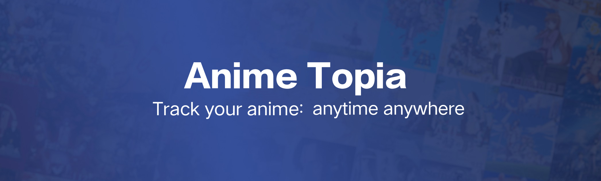

Join the Topia
Explore our website, engage with fellow weebs, and immerse yourself in the wonders of anime. Together, let's create a Topia where anime enthusiasts thrive!
Anime Topia is heaven for anime enthusiasts, where passion meets community. Our mission is to create a vibrant platform for fans to explore, discuss, and celebrate the captivating world of anime.
Anime Topia is a site created by an engineering student, an avid anime fan, Anime Topia was born out of a desire to connect with like-minded individuals.
 Anime Topia
Anime Topia